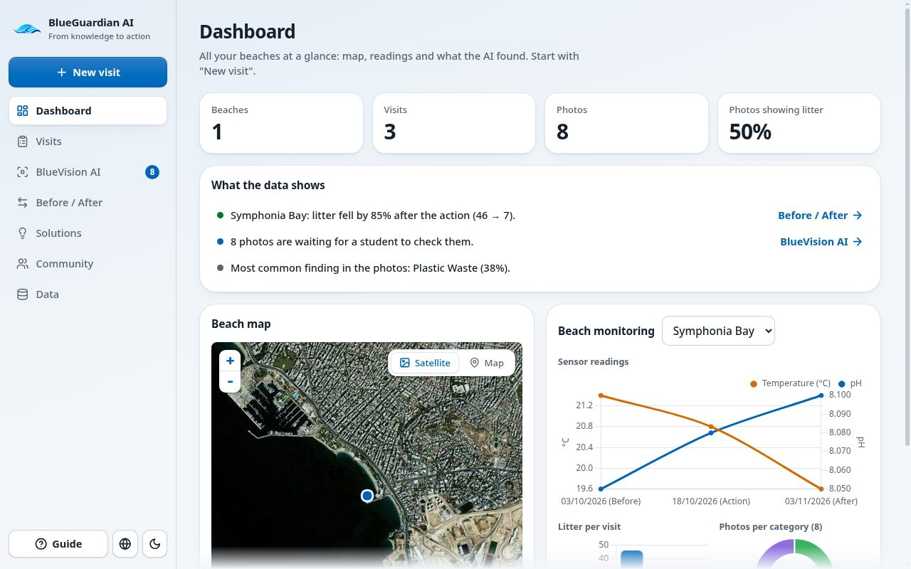
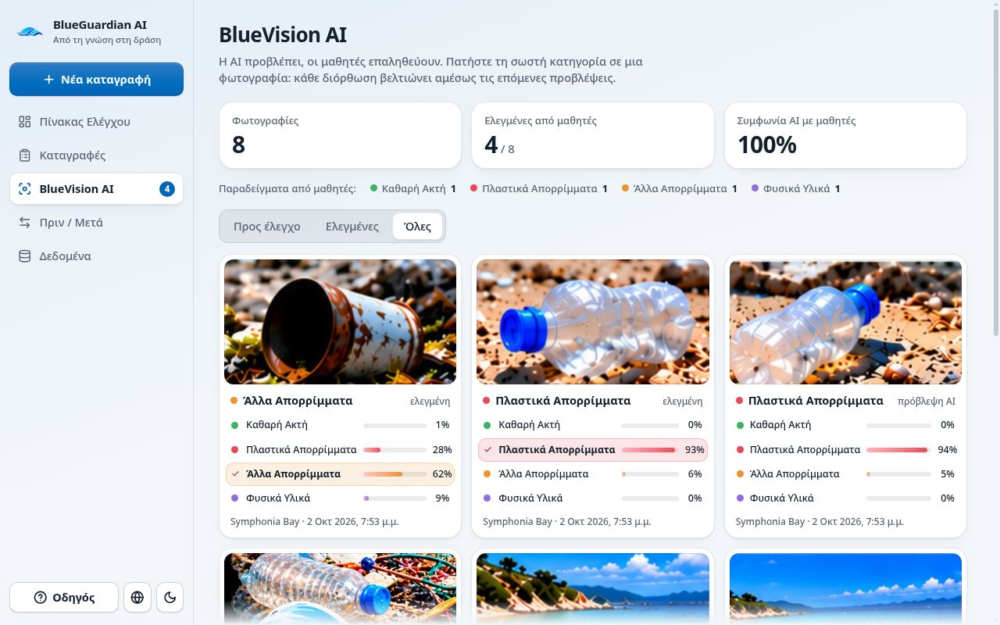
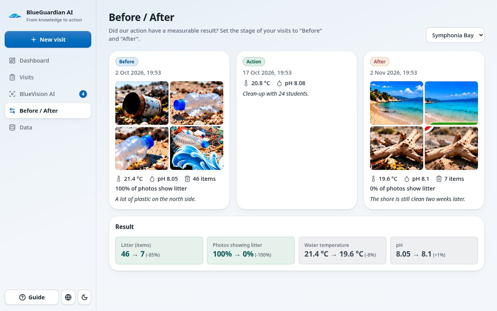

BlueGuardian AI
BlueGuardian AI
Sea Symphony · 3ο Γυμνάσιο ΑργυρούποληςSea Symphony · 3rd Junior High School of Argyroupoli
Από τη γνώση στη δράση, για πιο καθαρές θάλασσεςFrom knowledge to action, for cleaner seas
Καταγράψτε μια παραλία με φωτογραφίες και μετρήσεις. Η BlueVision AI αναγνωρίζει τα απορρίμματα, οι μαθητές την ελέγχουν, και στο τέλος βλέπετε με αριθμούς αν η δράση σας είχε αποτέλεσμα. Record a beach with photos and measurements. BlueVision AI recognises the litter, students check it, and at the end you see in numbers whether your action made a difference.
Για Windows, macOS, Linux και κάθε browser. Δωρεάν, χωρίς λογαριασμό. Τα δεδομένα σας μένουν στη συσκευή σας, εκτός αν επιλέξετε να τα μοιραστείτε.For Windows, macOS, Linux and any browser. Free, no account. Your data stays on your device unless you choose to share it.


Πώς λειτουργείHow it works
- ΠαρατηρούμεObserve
Πηγαίνετε στην παραλία και φωτογραφίζετε ό,τι βρίσκετε στην ακτή.Go to the beach and photograph what you find on the shore.
- ΜετράμεMeasure
Σημειώνετε θερμοκρασία νερού, pH και πόσα απορρίμματα μετρήσατε, μαζί με το σημείο στον χάρτη.Note the water temperature, pH and how much litter you counted, with the spot on the map.
- ΚατανοούμεUnderstand
Η AI κατατάσσει κάθε φωτογραφία και ο πίνακας ελέγχου δείχνει τι αλλάζει με τον χρόνο.The AI sorts every photo and the dashboard shows what changes over time.
- Δρούμε και ξαναμετράμεAct and measure again
Μετά τη δράση σας καταγράφετε ξανά. Η σύγκριση Πριν / Μετά δείχνει το αποτέλεσμα.After your action you record again. The Before / After comparison shows the result.
BlueVision AI
Κάθε φωτογραφία κατατάσσεται σε μία από τέσσερις κατηγορίες, με το ποσοστό βεβαιότητας να φαίνεται πάντα.Every photo is sorted into one of four categories, and the confidence is always shown.
- Καθαρή ΑκτήClean Beach
- Πλαστικά ΑπορρίμματαPlastic Waste
- Άλλα ΑπορρίμματαOther Waste
- Φυσικά ΥλικάNatural Materials
Ο άνθρωπος έχει τον τελευταίο λόγοPeople have the final say
Η AI κάνει και λάθη. Όταν ένας μαθητής πατήσει τη σωστή κατηγορία, η διόρθωση γίνεται παράδειγμα και οι παρόμοιες φωτογραφίες ενημερώνονται αμέσως.The AI makes mistakes. When a student clicks the right category, the correction becomes an example and similar photos update straight away.
Τρέχει στη συσκευή σαςIt runs on your device
Η ανάλυση γίνεται στη συσκευή σας: οι φωτογραφίες δεν ανεβαίνουν πουθενά για να αναλυθούν. Μετά την πρώτη φόρτωση, η εφαρμογή δουλεύει και χωρίς σύνδεση.The analysis happens on your device: photos are not uploaded anywhere to be analysed. After the first load, the app also works offline.


Πριν και ΜετάBefore and After
Η δράση μας είχε πραγματικό και μετρήσιμο αποτέλεσμα; Η εφαρμογή βάζει δίπλα δίπλα την κατάσταση πριν, την ημέρα της δράσης και την κατάσταση μετά, και υπολογίζει τη διαφορά.Did our action have a real, measurable result? The app puts the state before, the day of the action and the state after side by side, and works out the difference.
Ανοιχτά δεδομέναOpen data
Όλες οι καταγραφές εξάγονται σε CSV, για το Excel, για μια εργασία ή για να τις μοιραστείτε με τον δήμο σας.Every visit exports to CSV, for Excel, for a school project or to share with your municipality.
Κοινότητα σχολείωνA community of schools
Αν θέλετε, μοιράζεστε μια καταγραφή με το όνομα του σχολείου σας. Όλες οι κοινόχρηστες καταγραφές εμφανίζονται σε έναν κοινό χάρτη.If you want, you share a visit under your school's name. Every shared visit appears on one common map.
Χάρτης και δορυφόροςMap and satellite
Οι παραλίες σας εμφανίζονται σε χάρτη, με δορυφορική εικόνα υψηλής ανάλυσης.Your beaches appear on a map, with high-resolution satellite imagery.

Χρησιμοποιήστε τοUse it
Μεταφέρετε τα δεδομένα σας ανάμεσα στον browser και την εφαρμογή από τη σελίδα «Δεδομένα», με αντίγραφο ασφαλείας.Move your data between the browser and the desktop app from the "Data" page, using a backup file.